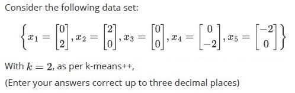

Home / MLT / Week 3 / Real questions
MLT week 3 - real exam questions
34 questions pulled from past papers whose wording matches this week's topics, newest first, duplicates removed. Pick your answers, then press Check answers. Figures and answer keys are the originals.
Elapsed 00:00
A Euclidean-distance-based  -means clustering algorithm was run on a dataset of
-means clustering algorithm was run on a dataset of  points with
points with  . If the points
. If the points  and
and  are both part of cluster
are both part of cluster  , then which ONE of the following points is necessarily also part of cluster ?
, then which ONE of the following points is necessarily also part of cluster ?
-means clustering algorithm was run on a dataset of points with . If the points and are both part of cluster , then which ONE of the following points is necessarily also part of cluster ?


Consider the one-dimensional dataset  Suppose
Suppose  -means is run with
-means is run with  clusters. At iteration
clusters. At iteration  , the centroids are
, the centroids are  The assignment step is performed using these centroids to produce new assignments
The assignment step is performed using these centroids to produce new assignments  for each point. Compute
for each point. Compute

Suppose -means is run with clusters. At iteration , the centroids are The assignment step is performed using these centroids to produce new assignments for each point. Compute
- 4
- 8
- 24
- 44
Which of the following statements is  true for the -means algorithm with
true for the -means algorithm with  cluster centres, between consecutive iterations and
cluster centres, between consecutive iterations and  ?
?
true for the -means algorithm with cluster centres, between consecutive iterations and ?- If ,then at least one data point will change its cluster assignment from iteration to .

- If , then no data point will change its cluster assignment from iteration to .

- If a data point changes its cluster assignment from cluster
 to cluster , it is guaranteed that the centroid of cluster strictly changes, i.e.,
to cluster , it is guaranteed that the centroid of cluster strictly changes, i.e.,  .
. - It is not possible for the -means algorithm to revisit a configuration, where a configuration corresponds to the -way partition generated by clustering at the end of each iteration.
A dataset containing 1,000 points is clustered using the -means algorithm. Which of the following values of is most likely to yield the  value of objective function of -means?
value of objective function of -means?
-means algorithm. Which of the following values of is most likely to yield the value of objective function of -means?


With respect to the Lloyd’s algorithm, choose the correct statements:
- The partition configurations cannot repeat themselves.
- After doing the reassignments (consider at least one point reassigned to the new cluster), we might get the same means for all clusters.
- Objective function after making the re-assignments strictly reduces.
- Objective function after making the re-assignments strictly increases.
Consider a clustering problem with
 data-points and two clusters
data-points and two clusters
 . As initialization, a subset of the dataset comprising the first fifty data-points, call this
. As initialization, a subset of the dataset comprising the first fifty data-points, call this
 , are assigned to cluster
, are assigned to cluster
 and the remaining points, call this
and the remaining points, call this


data-points and two clusters
. As initialization, a subset of the dataset comprising the first fifty data-points, call this
, are assigned to cluster
and the remaining points, call this
- Scenario-1 is possible, but scenario-2 is impossible.
- Scenario-1 is impossible, but scenario-2 is possible.
- Both scenarios are possible.
- Both scenarios are impossible.
Consider the following data-points in a clustering problem with five data-points and three clusters (k = 3):
 K-means
K-means
 is used to initialize the three means. The first mean is chosen to be
is used to initialize the three means. The first mean is chosen to be
 and the second mean to be
and the second mean to be
 . Find the probability of choosing
. Find the probability of choosing

K-means
is used to initialize the three means. The first mean is chosen to be
and the second mean to be
. Find the probability of choosing
Comprehension passage for this question
Consider a dataset in
 for a clustering problem with two clusters
. The
for a clustering problem with two clusters
. The
 data-point is represented as
data-point is represented as
 .
.


If
 , which of the following is the final cluster assignment after running K-means on this dataset with this initial configuration?
, which of the following is the final cluster assignment after running K-means on this dataset with this initial configuration?
, which of the following is the final cluster assignment after running K-means on this dataset with this initial configuration?


Comprehension passage for this question
Consider the following points on the real line:  We run
We run  -means algorithm with
-means algorithm with  . The initial cluster centers are
. The initial cluster centers are  and
and  Based on the above data, answer the given subquestions.
Based on the above data, answer the given subquestions.What will be the cluster means after iteration 1?


Which among the following is true with respect to the Lloyds’ algorithm?
- It always converges.
- It may fail to converge for an initialization while it may converge for otherinitialization.
- It is sensitive to outliers.
- The solution produced is always the optimal.

- The points (0, 2), (2, 0), and (2, 2) have the equal probability of being chosen asthe second cluster center.
- The probability of selecting (2, 2) as the second cluster center is twice that ofselecting (0, 2).
- If (2, 2) is chosen as the second cluster center, the algorithm will alwaysconverge in one iteration.
- The tie-breaking rule will affect the final cluster centers.
Comprehension passage for this question
Based on the above data, answer the given subquestions.

Perform K-means clustering with K = 2 and initial cluster centers at (−2, 3) and (2,−1). What are the final means of clusters after convergence?


Comprehension passage for this question
Based on the above data, answer the given subquestions.
Suppose we introduce a new data point (0, 0) to the existing dataset and perform K means with the same initial cluster centers. How many iterations would it require now for convergence?

- Greedy initialization always achieves F = Foptimal by maximizing the distancebetween initial centers.
- Greedy initialization may achieve F = Foptimal or a larger value depending onthe dataset and the initial choice.
- Greedy initialization does not ensure convergence for K-means clustering.
- Greedy initialization ensures convergence to a unique solution for any dataset.
How does K-means++ algorithm enhance the initialization process as compared to the standard K-means algorithm?
- It ensures the algorithm converges in a fixed number of iterations.
- It improves centroid initialization by spreading them out, leading to betterseparated clusters.
- It automatically calculates the best value of K.
- It removes the need to run the algorithm multiple times.
Which of the following statements is/are true?
- EM algorithm converges to a global optimum.
- Lloyd’s algorithm converges to a local optimum.
- Poor initialization does not affect the clusters produced by EM algorithm.
- Poor initialization leads to a slower convergence of Lloyd’s algorithm.
- Lloyd’s algorithm is sensitive to the number of clusters (k).
Select the correct statements from the following for k-means algorithm:
- In k-means algorithm, all cluster initializations lead to the same result.
- k-means algorithm is sensitive to outliers.
- One initialization may converge while another may not.
- The initialization of cluster centres may affect the number of iterations k-means takes to converge.
Comprehension passage for this question
Based on the above data, answer the given subquestions.

Which point has the lowest probability of being chosen as the 3rd cluster mean? Use squared distance to calculate the scores.
- (1,0)
- (2,3)
- (3,2)
- (1,2)
Comprehension passage for this question
Based on the above data, answer the given subquestions.

If (x1, y1) is the mean of the first cluster after convergence, find the value of x1 + y1.
Comprehension passage for this question
Based on the above data, answer the given subquestions.
If (x2, y2) is the mean of the second cluster after convergence, find the value of x2 + y2.
Imagine a dataset characterized by two features, Feature 1 and Feature 2, demonstrating a perfect negative correlation of -1. When applying k-means clustering with k = 3 to this dataset, what is the most likely arrangement of cluster centers that minimizes the within-cluster sum of squares (WCSS)?
- An equilateral triangle centered around the mean of the data.
- Cluster centers positioned along a straight line.
- A triangle with two acute angles, positioned strategically within the datadistribution.
- A right-angled triangle with one center at the origin.
Consider a dataset with two features (Feature 1 and Feature 2) exhibiting a perfect positive correlation (1). If you apply k-means clustering with k = 3, what is the most likely arrangement of cluster centers that minimizes the within-cluster sum of squares (WCSS)?
- An equilateral triangle centered around the mean of the data.
- Cluster centers positioned along a straight line.
- A triangle with two acute angles, positioned strategically within the datadistribution.
- A right-angled triangle with one center at the origin.
Comprehension passage for this question
Consider the data points shown in the following image:
 Consider the data points shown in the following image: Based on the above data, answer the given subquestions.
Consider the data points shown in the following image: Based on the above data, answer the given subquestions.Perform K-means clustering with K = 2 and initial cluster centers at (0, 0) and (6, 0). What are the final means of clusters after convergence?
- (2, 0) and (8, 0)
- (2, 0) and (8.5, 0)
- (0, 0) and (8, 0)
- (0, 0) and (8.5, 0)
- None of these
Comprehension passage for this question
Consider the data points shown in the following image:
Consider the data points shown in the following image: Based on the above data, answer the given subquestions.After introducing a new data point (7, 0) , the cluster centers were updated. Enter the sum of the updated x-coordinates for both cluster centers accurately, rounding your answer to two decimal places.
Consider Lloyd’s algorithm used for k-means clustering and choose the correct statements:
- K-means algorithm may get stuck at local minima.
- It guarantees finding the optimal clustering (global minimum) in every run.
- In practice, k should be as large as possible.
- If the resources are limited and the data set is huge, it will be good to prefer K-means over K-means++.

- C1
- C2
- C3
- It remains in the same cluster as in the first iteration
Comprehension passage for this question
A k-means++ algorithm with k= 3 was applied to the following 2D points: (2, 2), (3, 3), (4, 4), (10, 10), (12, 12), (13, 13) (2, 2) is chosen as the first cluster mean. Based on the above data, answer the given subquestions.Which point has the highest probability of being chosen as the 2nd cluster mean? Use the Manhattan distance to compute the distances.
- (4, 4)
- (12, 12)
- (10, 10)
- (13, 13)
Comprehension passage for this question
A k-means++ algorithm with k= 3 was applied to the following 2D points: (2, 2), (3, 3), (4, 4), (10, 10), (12, 12), (13, 13) (2, 2) is chosen as the first cluster mean. Based on the above data, answer the given subquestions.Let’s assume that (3, 3), (10, 10), and (12, 12) are the cluster means. You introduce a new data point, (−5, 10). Which cluster mean is the data point (−5, 10) closest to when using the Euclidean distance method?
- (3, 3)
- (10, 10)
- (12, 12)
- None of these
Comprehension passage for this question
Based on the above data, answer the given subquestions.

What is the probability of the following points x2, x1 (in that order) being chosen as initial cluster centers?
Comprehension passage for this question
Based on the above data, answer the given subquestions.
What is the probability of the following points x2, x3 (in that order) being chosen as initial cluster centers?
Comprehension passage for this question
Based on the above data, answer the given subquestions.
What is the probability of the following points x2, x5 (in that order) being chosen as initial cluster centers?
Consider unlabeled data with two features X1 and X2 as shown in the figure.
 Consider unlabeled data with two features X1 and X2 as shown in the figure. C1 and C2 are the coordinates of centroids obtained after certain iterations of K-means algorithm with K = 2. Which of the following options is correct about the silhouette score S? Note: Euclidean distance is used to calculate the distances.
Consider unlabeled data with two features X1 and X2 as shown in the figure. C1 and C2 are the coordinates of centroids obtained after certain iterations of K-means algorithm with K = 2. Which of the following options is correct about the silhouette score S? Note: Euclidean distance is used to calculate the distances.
Consider unlabeled data with two features X1 and X2 as shown in the figure. C1 and C2 are the coordinates of centroids obtained after certain iterations of K-means algorithm with K = 2. Which of the following options is correct about the silhouette score S? Note: Euclidean distance is used to calculate the distances.- S will be positive and close to 0.
- S will be positive and close to 1.
- S will be exact −1.
- S will be negative but need not be exact −1.

- cluster-1
- cluster-2
- can not be determined

- cluster-1
- cluster-2
- can not be determined